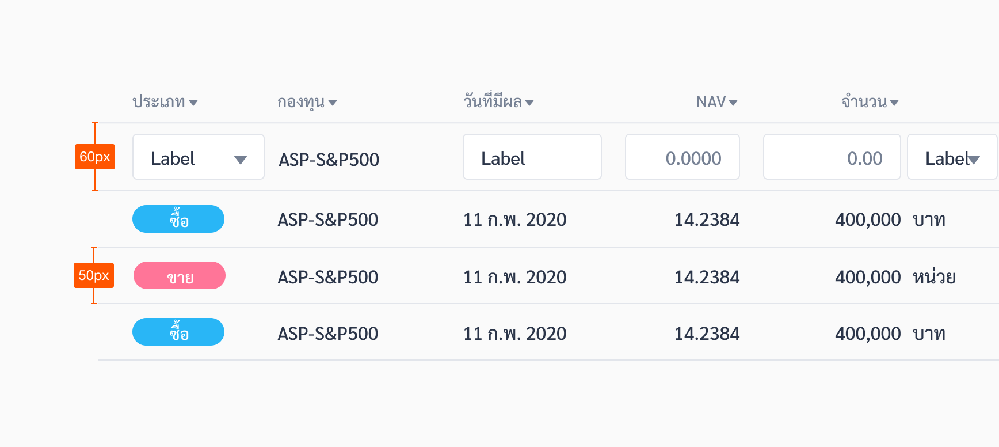

Table
Tables enable users to easily scan, understand, analyze, compare, and act upon the information within them.
| Types | Purpose |
|---|---|
| Cell with Navigate | Cells with a caret “>” makes the whole cell serves as a button that leads to more detailed content (can lead to a popup or a new page). |
| Cell with Accordion | Cells with Accordions open up a cell below to reveal more information. |
| Cell with Multiple | Cells can also have dropdowns, input fields, and icon buttons |
Spec
Normal Cell (50px Height)
Cell with Text Field (60px Height)
Numeric Alignment
Text Alignment
Example
The following HTML code is based off the Ahancer Seed
Table with Sorting
Usage
1. Keep Headers Short
Keep the data short, especially in headers. Use only one or two words when possible to communicate the essence of what the table contains. Tables are useful for scanning for the right information. Users will get slowed down in scanning if there’s too much information at once.

2. Some Examples of Screens with Tables include:
ใช้ในกรณีที่ไม่มี Label หรือต้องการขยายรายละเอียดเกี่ยวกับ Text fields นั้น เช่น กล่อง Search ทำ
3. Responsive Solution for Mobile Tables
Sometimes no matter how optimized we arrange a table we just cannot fit all the essential data. In this case on screens with a table, a hint appears until user touches anywhere on the screen. When in portrait mode, if there is a table a hint will always appear so users know that they can scroll. The hint disappears after the user touch anywhere on the screen. There are two types of hints:
4. Right Align Field
ใช้กับการกรอกข้อมูลพวกตัวเลข ที่ต้องมีการเปรียบเทียบ เช่น หน้าตั้งสัดส่วนการลงทุน